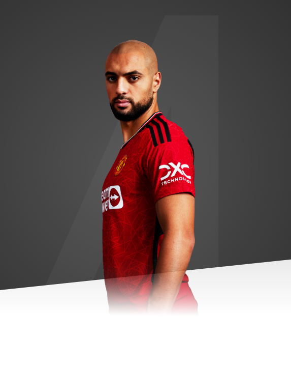

I will put everything into every action I take for the team.

AGE
27
APPEARANCES
5
CLEAN SHEETS
0
BIOGRAPHY
Sofyan Amrabat is a Manchester United player for the 2023/24 term, having joined on a season-long loan from Italian side Fiorentina.
The tenacious, well-rounded midfielder, capable of making an impact both with and without the ball, arrives at Old Trafford off the back of a stellar previous campaign for club and country.
Amrabat helped Fiorentina reach the finals of the Coppa Italia and the UEFA Europa Conference League, having been a standout performer at the mid-season 2022 FIFA World Cup, as Morocco defied expectations to record a fourth-place finish - their best-ever result at the tournament.
The 27-year-old captured the attention of United manager Erik ten Hag way before the last 12 months however, as the pair worked together at Amrabat's first professional club, FC Utrecht, as early as back in 2015.
Sofyan had risen through the ranks of the Dutch club, and it was there that he made his senior debut in November of the previous year, before Ten Hag took charge.
Our no.4 won a KNVB Cup and two Johan Cruyff Shields in the Netherlands - the country of his birth - after signing for Feyenoord in 2017 and went on to add Belgian top-flight experience to his CV upon subsequently joining Club Brugge.
The Morocco international - who represents the country of his parents' birth - has played his club football in Italy across the four years prior to his move to Manchester.
Our new signing was named Hellas Verona's Player of the Season while on loan there in 2019/20, before establishing himself as a mainstay in the midfield of his current parent club, Fiorentina, over the course of the previous three campaigns.